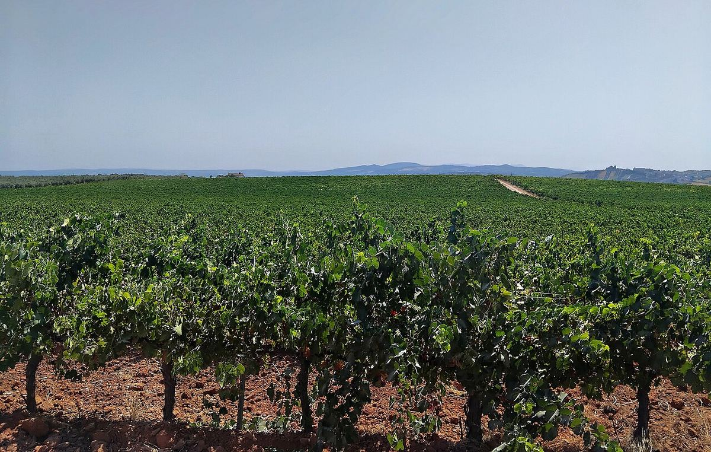

BLANC
Montilla-Moriles est une dénomination d'origine du sud de la province de Cordoue, consacrée surtout aux vins de type généreux élaborés avec le pedro ximénez. Ses finos atteignent souvent leur degré naturellement, sans mutage, et ses vins doux de pedro ximénez proviennent de raisins passerillés au soleil.

La viticulture dans la campagne cordouane a des racines anciennes et s'est fortement développée à l'époque moderne autour de localités comme Montilla et Moriles. Les liens avec Jerez ont été étroits : pendant longtemps, une partie des vins de la zone fut envoyée aux bodegas de Jerez, et le terme même d'amontillado vient de Montilla, en référence aux vins élaborés « à la manière de Montilla ». La dénomination d'origine, dotée de son propre conseil régulateur, a défendu l'identité de ces vins, qui partagent des techniques avec ceux de Jerez mais présentent des traits propres, dus surtout à la prédominance du pedro ximénez.
L'appellation s'étend sur le sud de la province de Cordoue, dans une campagne de douces collines autour de Montilla, Moriles, Aguilar de la Frontera, Puente Genil, Lucena et d'autres communes. On y reconnaît deux zones de qualité supérieure, la Sierra de Montilla et Moriles Altos. Le climat est méditerranéen avec une nette influence continentale : étés très chauds et secs, avec des températures élevées pendant de nombreuses semaines, hivers doux ou frais et pluies rares, concentrées en automne et en hiver.
Dans les zones de qualité supérieure dominent des sols blancs et calcaires, appelés localement albero ou albariza, qui retiennent l'humidité et la restituent lentement à la vigne. Ailleurs, on trouve des sols plus sableux et plus fertiles, appelés ruedos.
Le pedro ximénez est le cépage dominant. Grâce à la chaleur, le raisin atteint une richesse en sucre suffisante pour que les vins parviennent naturellement à leur degré, de sorte que de nombreux finos n'ont pas besoin d'être mutés à l'alcool. La fermentation se faisait traditionnellement dans de grandes jarres en terre cuite appelées tinajas, encore présentes dans de nombreuses bodegas. On cultive aussi d'autres cépages blancs, comme le muscat et l'airén.
Les vins sont élevés en fûts de chêne selon le système des criaderas et soleras. Le fino est élevé sous voile de flor ; l'amontillado associe élevage biologique et oxydatif ; l'oloroso et le palo cortado sont des vins à élevage oxydatif. Le Pedro Ximénez doux est élaboré avec des raisins séchés au soleil après la vendange, selon le procédé appelé asoleo, jusqu'à concentration de leurs sucres ; il donne des vins très denses et sombres, aux arômes de raisins secs, de figues et de fruits secs. La zone produit aussi des vins blancs jeunes non élevés.